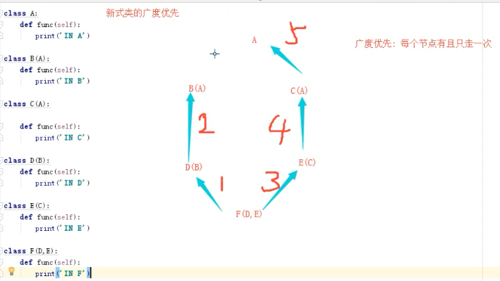

面向对象三大特性：封装、继承、多态
继承的概念：
在定义类时，可以从已有类当中提取想要的内容
被继承的类称为父类、基类、超类，新定义的类称为子类、派生类
注意:如果派生类中的属性与基类属性重名，那么派生类的属性会覆盖掉基类的属性。包括初始化函数。
派生类在初始化函数中需要继承和修改初始化过程，使用’类名+__init__(arg)’来实现继承和私有特性,也可以使用super()函数。
继承的优点：
1.节省代码
2.规范代码
继承的作用
面向对象的编程带来的主要好处之一是代码的重用，实现这种重用的方法之一是通过继承机制。继承完全可以理解成类之间的类型和子类型关系。
初识继承:
只执行本类的方法
只执行父类的方法
既执行父类的方法又执行本类的方法
父类名.类名(参数)
super().方法名(参数(self参数自动传值))
类
新式类:凡是继承object类都是新式类
python3x所有的类都为新式类,因为python3x中的类都默认继承object
经典类:不继承 object类都是经典类
python2x(既有新式类,又有经典类)所有的类都默认不继承object类,都默认为经典类,可以用object继承为新式类
继承的分类：
1.单继承
新式类和经典类查询顺序一样
2.多继承
新式类:遵循广度优先
一条路走到倒数第二级,判断,如果其他路能一条路走到低,则返回走另一条路,如果不能,则走到终点
经典类:遵循深度优先
一条路走到低
广度优先的图解如下:

代码如下:
# class A:
# pass
# # def func(self):
# # print('IN A')
#
# class B(A):
# pass
# # def func(self):
# # print('IN B')
#
# class C(A):
# # pass
# def func(self):
# print('IN C')
#
# class D(B):
# pass
# # def func(self):
# # print('IN D')
#
# class E(C):
# # pass
# def func(self):
# print('IN E')
#
# class F(D,E):
# pass
# # def func(self):
# # print('IN F')
#
# f1 = F()
# f1.func()